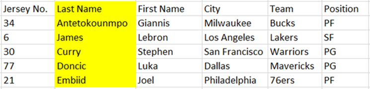
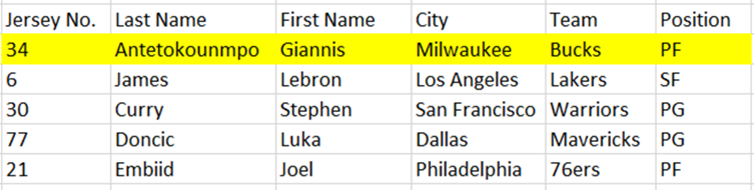
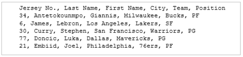
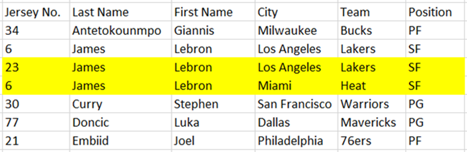

Flat Files
Flat files are generally in plain-text form, where each line holds only one record. A flat file can be a plain text file (e.g. csv or txt), or a binary file. Information stored in a flat file is generally alphanumeric, meaning plain numbers and letters, with little or no formatting. Relationships can be inferred from the data in the database, but the database format itself does not make those relationships explicit. The fields in the record are separated using delimiters such as tabs and commas and commonly appears in a tabular form. These tables provide a systematic way to access, manage, and change data.

Columns are known as a field. These columns each represent one dimension of the database.

The first row of a flat file database contains the field name for each column, and each row after the first represents a single record. Each record contains the same type of information as the other rows in the flat file as defined by the columns that describe the type of data.

A single piece of information from the table is called an item.
Comma-Separated Values (CSV)
One of the most common delimited text files that is used for flat file databases. Each line/row is the record. Each record consists of fields/columns which are separated by commas. In simpler terms, a CSV file stores tabular data in plain text.

To put into perspective, the above example of a table flat file database can be represented in CSV as follows:
Advantages of a Flat File Database
A flat file database consists of a single file with no structure relationship.
Ease of use - flat file databases are easy to create and easy to maintain. It is simple to use as it does not require extensive expert knowledge of computers. Similarly, it is easy to retrieve and understand information from tables, as they are minimalistic and simple in design.
Disadvantage of Flat File Database
Redundancy - as flat file databases are simple and only contain a single relational table, the biggest weakness to flat file databases is that data is often repeated as many times as new records are input. This could lead to input errors and inconsistencies.
For example, if we were to add new items for a record in the previous example with the same Last Name and First Name, it would look like as follows:
What is it used for?
Flat-file databases are still very useful for commonly accessed information. This could include simple name and address files, memberships, rosters, etc. Spreadsheets such as Microsoft Excel and Google Sheets can be used to create and edit simple flat-file databases.
Being simple in structure, flat-file databases are widely used to store simple data that does not require multiple tables to represent. Their simplicity also makes it easier to use and access information for data warehouses or data lakes.